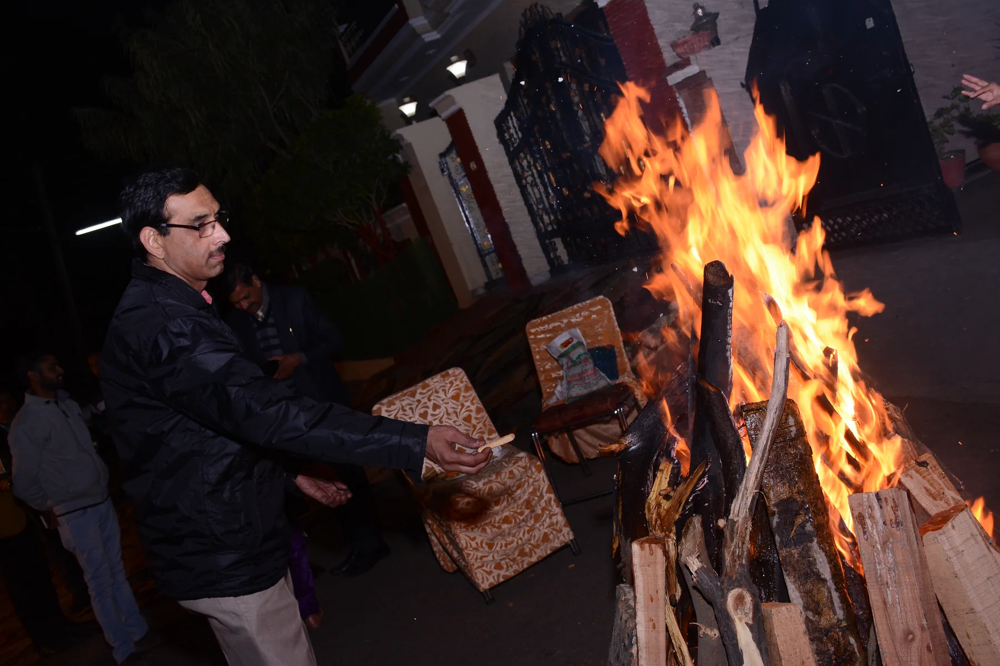

Lohri — ਲੋਹੜੀ ↗
A winter festival widely observed in Punjabi communities, often marked by a communal bonfire, songs and seasonal foods.
COLLECTION 13 · FESTIVALS & SEASONS
Explore Punjabi seasonal festivals, melas, community gatherings and the customs that bring people together.

13FESTIVALS & SEASONS
PUNJAB HERITAGE COLLECTIONBenipal hardarshan · CC BY-SA 4.0 · source & licenceA LIVING TRADITION
Festivals are living practices with different meanings across regions, families and faith communities. This collection documents the context and voices behind each celebration.
A winter festival widely observed in Punjabi communities, often marked by a communal bonfire, songs and seasonal foods.
A spring harvest festival with major significance in Punjab; for Sikhs it also commemorates the formation of the Khalsa in 1699.
A monsoon-season gathering associated in many Punjabi communities with women’s songs, dance and social visits.
A springtime celebration associated with seasonal change and kite-flying in some Punjabi contexts; practice and public observance vary.
Fairs that bring together local performance, trade, food, religious observance and community life.